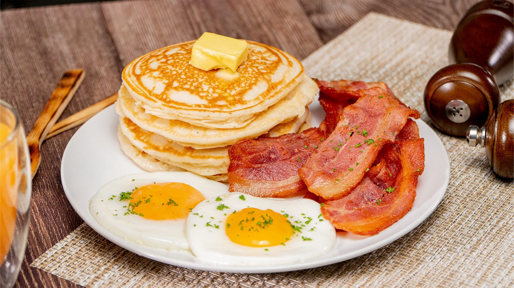

THE ODIN RECIPES

"This smells like... Band-Aids"
INGREDIENTS
- 2 large British Lion eggs, separated
- 75ml/3floz milk
- 100g/4oz self raising flour
- 2 tbsp caster sugar
- pinch of salt
- 1 tbsp vegetable oil for frying
- a knob of butter
- rashers of streaky bacon
- 6 large British Lion eggs
- 2 tbsp milk
PROCEDURES
-
Place the egg yolks and milk in a large bowl, sift over the flour,
caster sugar and salt and mix well. Whisk the egg whites in a clean
grease-free bowl until they form soft peaks. Fold into the flour mixture.
-
Heat a little oil in a large frying pan. Drop two to three large spoonfuls
of the pancake mixture into the hot pan and cook for 2 mins until crisp and
golden. Turn over and cook for a further 1 min until golden. Transfer to a
clean tea towel to keep warm. Cook the remaining batter in the same way to
make 12 pancakes.
-
Cook the bacon under a hot grill for 3-4 mins, turning once until crisp.
Beat the eggs and milk together with plenty of seasoning. Melt the butter
in a non-stick pan, add the eggs and cook over a low heat for 2 mins,
stirring until the eggs scramble and are cooked to your liking.
-
To serve, pile two or three warm pancakes on each plate, and serve with
the bacon and scrambled egg.